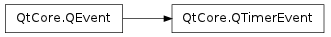

QTimerEvent ¶

Detailed Description ¶
The PySide.QtCore.QTimerEvent class contains parameters that describe a timer event.
Timer events are sent at regular intervals to objects that have started one or more timers. Each timer has a unique identifier. A timer is started with QObject.startTimer() .
The PySide.QtCore.QTimer class provides a high-level programming interface that uses signals instead of events. It also provides single-shot timers.
The event handler QObject.timerEvent() receives timer events.
- class PySide.QtCore. QTimerEvent ( timerId ) ¶
-
Parameters: timerId – PySide.QtCore.int Constructs a timer event object with the timer identifier set to timerId .
- PySide.QtCore.QTimerEvent. timerId ( ) ¶
-
Return type: PySide.QtCore.int Returns the unique timer identifier, which is the same identifier as returned from QObject.startTimer() .